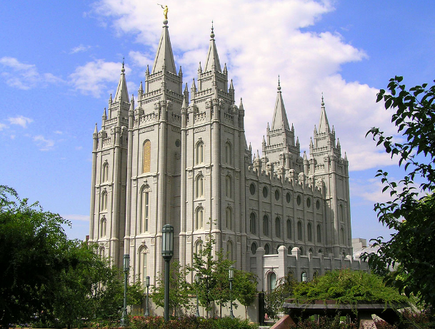
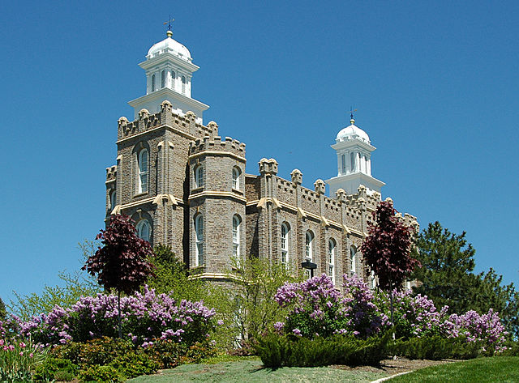
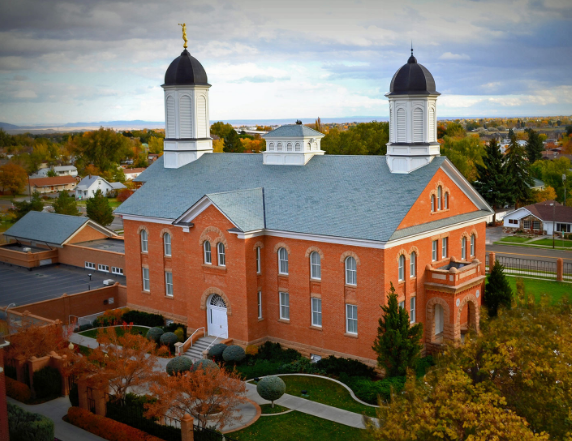
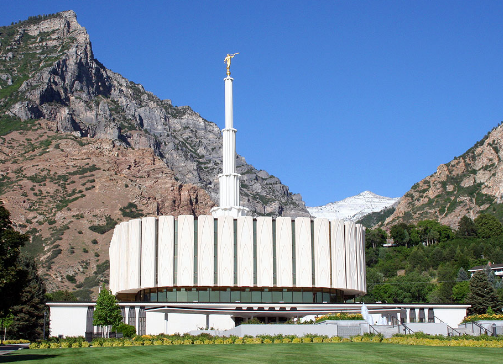
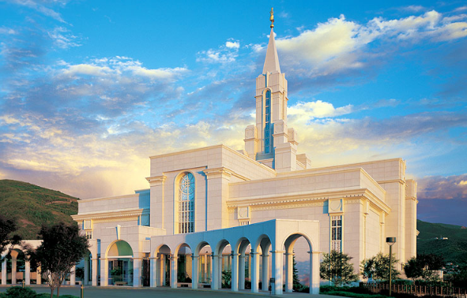

Temples?
If you are citizen of Utah, its nothing really special, but for foreigners
its something unusual. There are total 17 LDS temples, each one is uniqe! Here are some of them - I chose my favourites ones. And which are your favourite temples?
Salt Lake Temple
Salt Lake Temple is main LDS temple and the biggest one. You can find him in Salt Lake City, Downtown, on Temple Square.

Logan Temple
In my opinion, this one is the best-looking temple. Located in Cache County, Logan.

Vernal Temple
Even though this one has "normal" and decent style, its still wonderful. Can be seen in Uintah County, Vernal.

Provo Temple
Provo temple looks so futuristic! You can spot significant golden statue of Moroni (Prophet in Book of Mormon) on top of the tower.

Bountiful Temple
This temple reminds me some heaven structure. Definetly worth checking!
